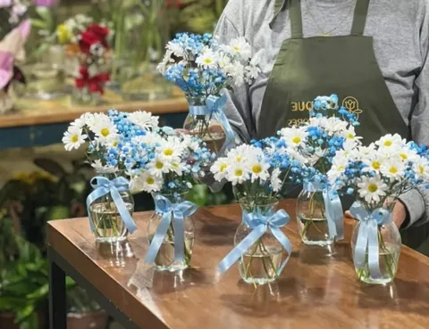
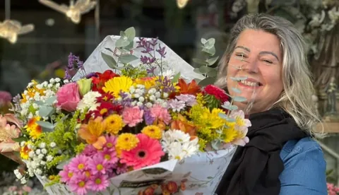
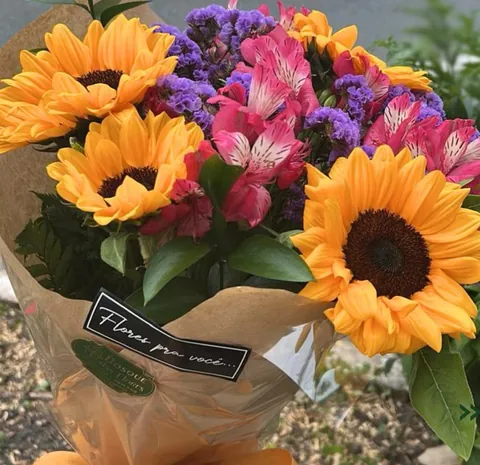
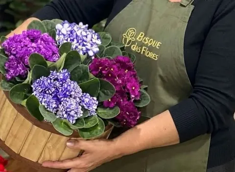
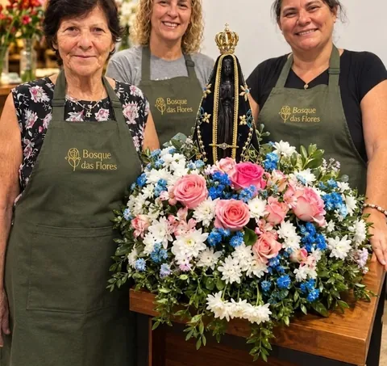

Arranjos para festas
Vasinhos de vidro com margaridas e fita, um para cada mesa. Diga a cor da festa e quantos precisa.

Floricultura de bairro no Bucarein, em Joinville. Encomende pelo WhatsApp e a gente prepara.
Av. Getúlio Vargas, 501, Bucarein

Buquês, arranjos e plantas montados na loja, para presente, festa ou homenagem.

Vasinhos de vidro com margaridas e fita, um para cada mesa. Diga a cor da festa e quantos precisa.

Violetas na cestinha de madeira, para alegrar o dia, e orquídeas.
De uma rosa só, embalada com fita, até buquês maiores para presentear.

A Bosque das Flores abriu em junho de 1980. Hoje fica na Av. Getúlio Vargas, no Bucarein, e as floristas de avental verde montam os arranjos ali.
“Há mais de 45 anos perfumando e colorindo sua vida com flores, amor e dedicação.”
Mande uma mensagem com a ocasião, as cores e o dia. A floricultura responde pelo WhatsApp.